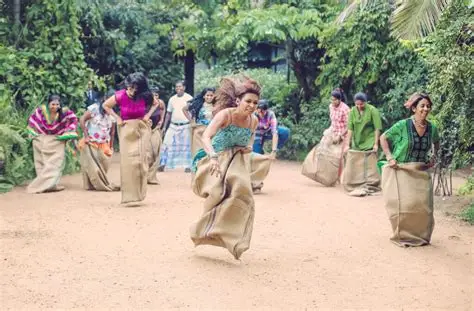
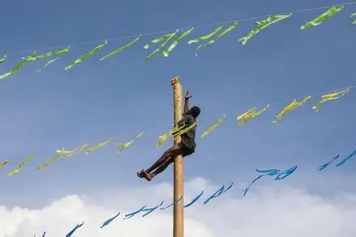
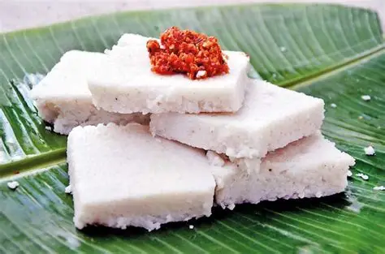
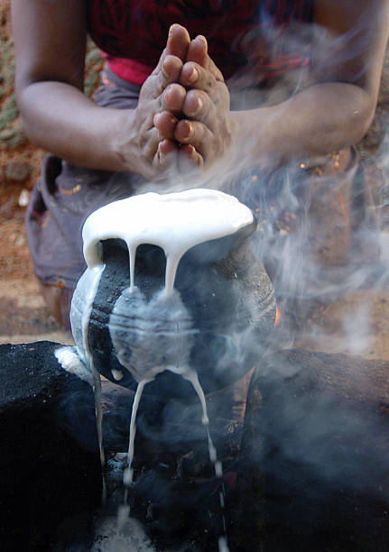

Sri Lanka’s Sinhala and Tamil New Year (Avurudu/Puththandu) is celebrated every mid-April with rituals, family gatherings, and traditional foods like kiribath (milk rice), kavum, and kokis. It marks the sun’s transition from Pisces to Aries and symbolizes renewal, prosperity, and community bonding.
🌞 Origins and Timing
Astrological basis: The New Year begins when the sun moves from Meena Rashiya (Pisces) to Mesha Rashiya (Aries).
Dates: Usually April 13–14, coinciding with the end of the harvest season.
Neutral period (Nonagathaya): A pause between the old and new year where daily work stops, and people focus on religious observances.
z
🏡 Rituals and Customs
Lighting the hearth: Families light the first fire at an astrologically determined time to cook kiribath.
First transactions: Business, meals, and even financial dealings are done at auspicious times.
Oil anointing: Herbal oils are applied for cleansing and blessings.
Visiting temples: Offerings are made at Buddhist and Hindu shrines, including the Temple of the Tooth Relic and Sri Maha Bodhi.
🍛 Traditional Foods
Kiribath (milk rice) – central dish symbolizing prosperity.
Kavum (oil cakes) – deep-fried sweet treats.
Kokis – crispy Dutch-inspired sweetmeat.
Plantains and fruits – harvested in abundance during the season.
🎉 Games and Community Spirit
Raban drum beating – a rhythmic tradition to welcome the season.
Avurudu games: Tug-of-war, pillow fights, and climbing the greased pole.
Gift exchanges: Families give new clothes and sweets.
Travel home: Shops close for a week as people return to villages to celebrate.
🤝 Cultural Significance
Unity: Celebrated by both Sinhalese (Aluth Avurudda) and Tamils (Puththandu).
Agricultural roots: Linked to gratitude for the harvest.
Community bonding: Neighbors exchange food, and charity (disna seema) is emphasized.
Explore and taste scenes from Sri Lanka’s most delicious and beautiful tradition festivals.



